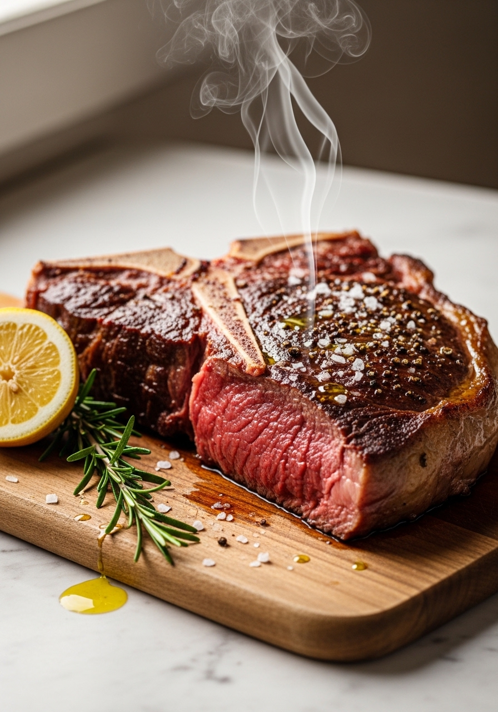
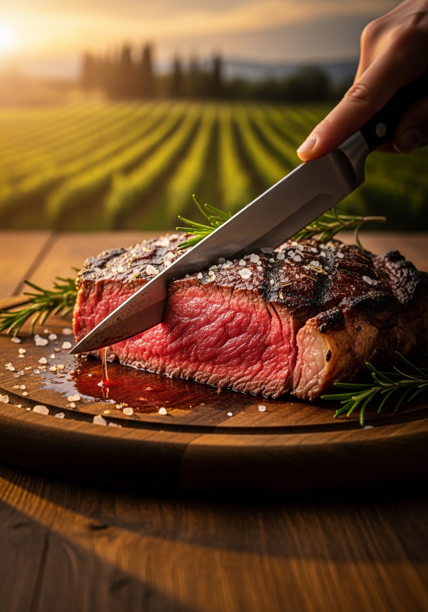

La bistecca alla fiorentina è l'icona assoluta della cucina toscana e uno dei piatti più famosi d'Italia nel mondo. È una costata di manzo (o vitellone) con l'osso a T, alta almeno 4-5cm, pesante tra i 600g e il chilo, cotta su brace di legna viva a fuoco altissimo — sempre e solo al sangue, o al massimo rosata. Non si cuoce mai ben cotta: sarebbe un sacrilegio per qualsiasi toscano. Il condimento è di una semplicità quasi filosofica: sale grosso, pepe, olio EVO a crudo dopo la cottura e — opzionale — qualche goccia di limone. Nient'altro. La fiorentina si mangia, non si discute.

FiorentinaLa bistecca alla fiorentina originale si fa con la Chianina — una razza bovina autoctona della Val di Chiana (Toscana e Umbria), una delle più antiche d'Europa. La Chianina produce carne magra, tenera e di sapore intenso, con una marmorizzazione fine che si scioglie durante la cottura. La bistecca alla fiorentina ha ottenuto l'IGP (Indicazione Geografica Protetta) per la Chianina, la Maremmana e la Podolica toscana. Fuori dalla Toscana, la fiorentina viene spesso proposta con carni di altri tagli o razze — perfettamente buona, ma tecnicamente non 'fiorentina'. Quando scegli la carne, cerca costata con osso a T (che include il filetto su un lato e il controfiletto sull'altro), maturata (frollata) almeno 20-30 giorni per tenerezza e sapore.
In Toscana, la risposta alla domanda sulla cottura della fiorentina è unanime: al sangue (inglese: rare). La temperatura interna ideale è 50-52°C al cuore. Rosata (medium-rare, 55-57°C) è accettata dai più moderni. Oltre i 60°C — ben cotta — la carne perde succhi, sapore e tenerezza in modo irreversibile. C'è un detto fiorentino: 'La fiorentina si deve lamentare nel piatto' — riferendosi al leggero sfrigolio dei succhi rosati quando la carne calda incontra il piatto. Se ordini la fiorentina ben cotta in un ristorante toscano, non stupirti se il cameriere ti guarda con disappunto.
Ingredienti
Procedimento

Dal macellaio: chiedi la costata con osso a T, alta almeno 4cm (meglio 5-6cm), con marmorizzazione visibile nel grasso intramuscolare. La carne deve essere di un rosso scuro e profondo — non rosso brillante (segnale di carne fresca non frollata). Chiedi se è stata frollata: una frollatura di 20-30 giorni rende la carne incomparabilmente più tenera e saporita. A casa: conserva la fiorentina coperta con carta da macellaio (non pellicola) in frigorifero fino a 3-4 giorni. Tira fuori 1 ora prima. Non congelare una fiorentina di qualità se puoi evitarlo: lo scongelamento altera la struttura delle fibre. Se devi congelare, fallo immediatamente dopo l'acquisto e scongela lentamente in frigorifero per 24 ore.
La tradizione vuole una bistecca di almeno 600g (con l'osso) — solitamente tra i 700g e il chilo. Le versioni più grandi (fino a 1,5kg) si trovano nelle macellerie storiche fiorentine. La bistecca si condivide tra 2 persone, tagliata a fette spesse sul tagliere dopo il riposo. Non si serve mai in porzione individuale: è un piatto conviviale.
Sì, ma il sapore è leggermente diverso. La brace di legna di quercia o di ulivo dà un aroma affumicato inimitabile. Il gas è più pratico e la cottura è ottima. L'importante è l'alta temperatura: scalda il barbecue a gas al massimo per 15 minuti prima di mettere la carne. Anche una padella in ghisa caldissima funziona in casa — non dà la stessa crosta della griglia a fuoco diretto, ma il risultato è molto buono.
Il sale si aggiunge DOPO la cottura, non prima. Il sale in anticipo estrae l'umidità dalla carne e impedisce la formazione della crosta bruna caratteristica (reazione di Maillard). Sala con sale grosso immediatamente dopo aver tolto la bistecca dalla griglia, mentre è ancora caldissima: il calore scioglie il sale e lo distribuisce nella carne.
Per i toscani sì — è non negoziabile. La temperatura interna ideale è 50-52°C al cuore (al sangue). Puoi cucinarla rosata (55-57°C, medium-rare) se preferisci. Oltre i 60°C la carne perde sapore e tenerezza irrimediabilmente. Detto questo: cucina la carne come preferisci. Ma sappi che la fiorentina al sangue è il piatto toscano; quella ben cotta è un'altra cosa.
Una buona fiorentina dovrebbe essere frollata (dry-aged) almeno 20-30 giorni. La frollatura rompe gli enzimi muscolari, rendendo la carne più tenera e concentrando il sapore. Le versioni frollate 45-60 giorni sono considerate premium, con un sapore intensissimo quasi nocciolato. Chiedi al tuo macellaio di fiducia: se lavora bene, ha carne frollata sempre disponibile.